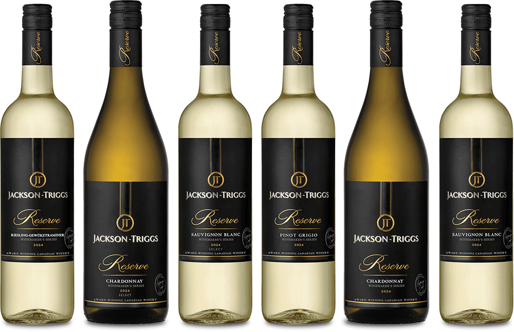

Shop Now
Shop Now
Introducing the Jackson-Triggs Winemaker’s Series
A word from our Okanagan Winemaker, Anthony Coop
For over 25 years, Jackson-Triggs has been a proud cornerstone of the Okanagan wine community, crafting the Reserve VQA wines you know and love for their exceptional taste and quality. This past season, severe winter conditions weather brought an unprecedented cold snap to the region, causing devastating losses to our vineyards and impacting the wine industry throughout the Okanagan Valley.
Despite these challenges, our commitment to delivering great-tasting wines remains unwavering. In true Canadian spirit, we have risen to the occasion, crafting this exceptional 2024 vintage with the same dedication to taste that defines Jackson-Triggs. By carefully sourcing grapes primarily from the Pacific Northwest wine region, we’ve ensured this vintage continues to deliver the smooth, flavourful profile you’ve come to expect and enjoy in every glass.
As we work closely with our local growers to rebuild and restore the Okanagan vineyards, we invite you to celebrate this resilient vintage, a testament to our passion for great-tasting wines and the spirit of our winemaking community. We truly appreciate your support and understanding as we navigate this unique year. Together, we’ll toast to brighter seasons ahead!


How did the freeze impact the vineyards?
A Challenging Season, A Commitment to the Future
In January 2024, the Okanagan experienced one of its coldest winters on record, with temperatures dropping below -20°C for an extended stretch. This deep freeze caused significant damage to vineyards and led to major crop losses across the region.
While it’s been a tough season, it’s also a reminder of the resilience and dedication that define BC’s winemaking community. At Jackson-Triggs, we remain committed to crafting high-quality Canadian wines and continuing the legacy we’re proud to be part of.
Jackson-Triggs Winemaker’s Series


Frequently Asked Questions
Frost-related challenges have impacted most BC wineries this year, with the Okanagan Valley region seeing aover a 90% loss in grape production for 2024.
At Jackson Triggs, this meant we weren’t able to produce our white and rosé wines from the 2024 harvest. Thankfully, our 2023 VQA Okanagan red wines came from a strong vintage, and these will continue to be available on shelves through most of this year.
Crafted in BC: Supporting Our 2024 Vintage
With the challenges facing BC wineries this year, the provincial government introduced a temporary support program to help protect our local wineries and the industry and the communities they support. behind it. Through the “Crafted in BC” initiative, our winemaker had the flexibility to adapt explore and innovate their grape sourcing for the 2024 vintage, allowing us to continue producing the great tasting wines you know and love.
By partnering with trusted growers and wineries outside of BC, we created our 2024 Winemaker’s Series—wines that reflect the same quality and character you’ve come to expect. We loved crafting these special editions and are excited for you to enjoy them.
This is a short-term solution that allows us to continue delivering the wines you love while our vineyards recover. The good news? Over the next 18 months, we’re expecting a strong comeback as we replant and restore our vines.
Our passion is firmly rooted in the Okanagan, and we’re looking forward to crafting wines from our home soil again soon. In the meantime, we’re proud to share our 2024 release—a vintage made with care, and with the same quality, balance, and flavor you’ve come to expect.
We know our wines have a place in your glass—and in your moments. As we faced the challenges of this vintage, one thing guided us: staying true to the wines you know and love.
To do that, we teamed up with trusted partners in the Pacific Northwest*, regions that grow varietals similar to those in BC. With skilled grape growers and winemakers who share our passion for quality, we carefully sourced fruit that meets our high standards.
From there, our winemaking team took over—bringing their expertise and care to every step, ensuring this vintage delivers the signature flavour, balance, and taste you expect. A different path this year, but the same exceptional experience.
Our 2024 vintage has been primarily sourced from the Pacific Northwest wine region, in full compliance with approved government labeling regulations. A small portion of Canadian grapes, sourced from Ontario, has been included in each of our wines. This was done under the framework of the Crafted in Canada (do we mean Crafted in BC?) program and was purposefully executed to complement and enhance each wine’s profile during the final stages of production.
* Pacific northwest wine region is the region that extends south from the Okanagan to create the Cascadia corridor, a continuous expanse of land that share similar terroir characteristics.